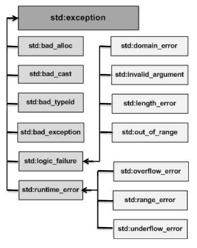

try - catch¶
try - Block¶
Try do do something:
try {
dothat();
dothis();
dothose();
finally();
}
...
Linear execution
Error handling not after every step
… but rather in a separate block
catch - Block¶
try {
...
}
catch (const ThisException &e) {
std::cerr << e.what() << std::endl;
// ... react ...
}
catch (const ThatException &e) {
std::cerr << e.what() << std::endl;
// ... react ...
}
catch (const std::exception &e) {
std::cerr << e.what() << std::endl;
// ... give up ...
}
Exceptions¶
No restrictions: everything can be thrown and caught
try {
...
}
catch (int i) {
...
}
⟶ One has to think if it makes sense!
Some structure is recommended
Standard Library: Exception-Hierarchy¶
Custom Exceptions (1)¶
Recommendation:
Don’t throw numbers …
Don’t throw strings …
… fit yourself into the exception hierarchy
⟶ minimal inheritance
namespace std {
class exception
{
public:
virtual const char* what() const throw() = 0;
};
}
Custom Exceptions (2)¶
class MyException : public std::exception
{
public:
virtual const char* what() const throw()
{
return "dammit!";
}
};
Here:
voidconstructorCan be arbitrary
… as far as interface is ok
Throwing Exceptions - throw¶
void dothis()
{
// ...
if (error_detected)
throw MyException();
// ...
}
Last Words¶
returnif ok,throwif error⟶ alternative return path
Destructors of local objects are called
Important design decision
How many custom exception do I define?
⟶ Error handling at which granularity?